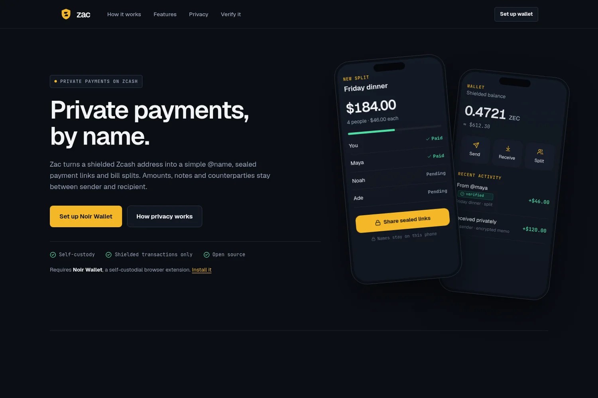
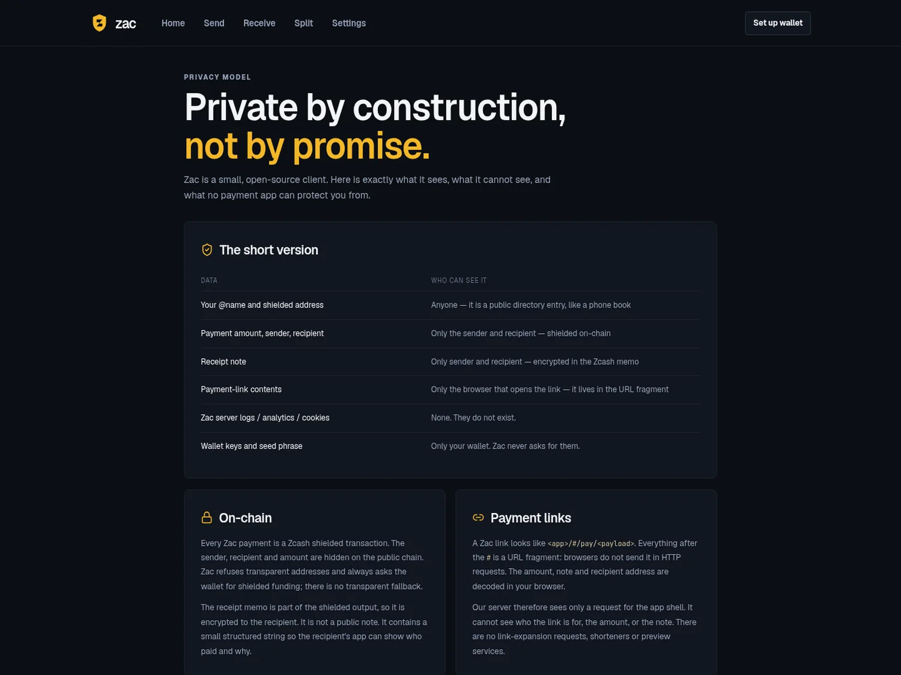

Case study · Mhizter Fatai
Zac
Send and receive Zcash by a name instead of an address, with payment requests that only the two people involved can read — including from the app's own server.

The problem
Zcash gives you a genuinely private transfer, then hands you a long unified address to paste. Splitting a bill means chasing several people, and asking to be paid usually means putting the amount and the reason into a chat app that keeps both. The privacy the chain provides leaks at the first human step.
The constraints
The server had to be treated as hostile. If a payment request travels through it, the server should learn nothing about who is paying whom, how much, or why — not the lookup, not the note. That rules out per-name lookups (they leak which name you searched), means the directory has to be downloaded whole and searched on the device, and forces a strict content policy so no third-party script can see any of it.
What we built
Claiming a name is a signed message, not a transaction — no fee, and the browser re-verifies every record, so the server cannot forge a name. Sending refuses transparent receivers outright, so no wallet can quietly fall back to a public payment. A payment request is encrypted in the browser with AES-256-GCM and stored as ciphertext with the key kept in the URL fragment, which browsers never send; each link works once, for thirty minutes. A receipt memo is opt-in, and when signed, the recipient sees "from @name ✓ verified" — proof of payment nobody else can fake.

What was hard
Writing down the limits honestly. Zac is not audited, and Noir's current testnet build stamps transactions with a consensus branch ID the testnet rejects — so testnet sends fail cleanly and nothing is spent, while mainnet works. Single transactions pay one recipient, because multi-output signing is not exposed by the wallet APIs yet; the app does not pretend otherwise. Names claimed from one wallet are linkable, so the privacy page tells you to use a separate wallet per identity. Each of those is a real hole, and each is named on the page rather than left for a user to discover.
Where it landed
Verified end to end on Zcash mainnet: claim a name, send to it with the amount entered in dollars, and the recipient sees the confirmed shielded payment attributed to that name. 33 tests cover the parts that are easy to get subtly wrong — exact zatoshi arithmetic, ZIP-316 address decoding against the official vectors, replay and tampering on signed receipts, and sealed-link decryption with the wrong key.